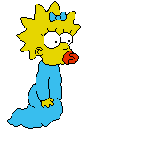

Bart é o filho mais velho travesso, rebelde, incompreendido, perturbador e "potencialmente perigoso". Ele é o único filho de Homer e Marge Simpson , e o irmão mais velho de Lisa e Maggie . Ele também foi apelidado de "Cosmo", depois de descobrir um cometa em "Bart's Comet". Bart também esteve na capa de vários quadrinhos, como "Critical Hit", "Simpsons Treasure Trove # 11" e "Winter Wingding". Bart também tem uma série de quadrinhos de 100 edições intitulada Simpson Comics Presents Bart Simpson. Bart é vagamente baseado em Matt Groening e seu irmão mais velho, Mark Groening.
Margareth "Maggie" Simpson - a filha mais nova, de apenas 1 ano. Apenas fica com a sua chupeta, porém assume papel decisivo em alguns episódios como em "Quem Matou o Sr. Burns" na qual "acidentalmente" atirou no Sr. Burns. No episódio "Poppa's Got a Brand New Badge", entretanto, demonstra formidável perícia ao por fora de ação com um rifle um grupo de mafiosos que ameaçavam seu pai. Posteriormente esconde a arma em seu berço.
A pequena Maggie está sempre se metendo nas situações mais perigosas. Contudo, ela sempre depende da ajuda de outras pessoas para se dar bem, como alguns bebês que ajudaram-na a escapar de uma creche ou quando ursos cuidaram dela quando ela se perdeu numa floresta. O mais significativo dos aliados de Maggie é o barman Moe Szyslak, que provou ser um herói improvável na temporada 14, no episódio "Moe e Maggie", quando salvou a vida da pequena duas vezes (a primeira impedindo-a de cair da ponte e a segunda salvando-a de um tiroteio entre gangues).